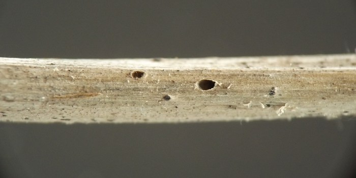
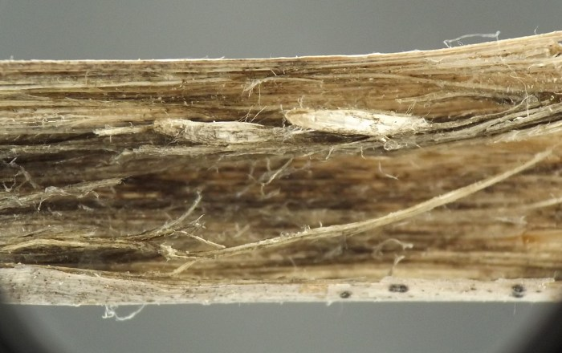
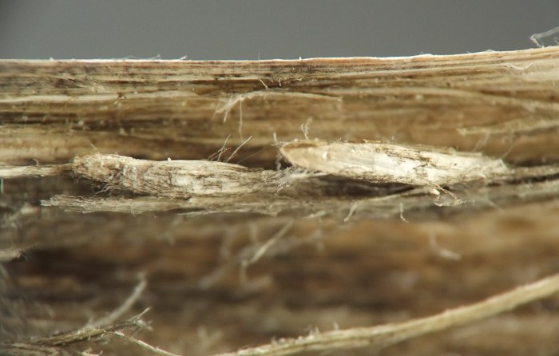

Local feeder (Diptera: Cecidomyiidae) in stems of Maianthemum
| Record no.: | 0325 |
|---|---|
| Feeding guild: | Local feeder in stem |
| Taxonomy: | Diptera: Cecidomyiidae |
| Stages observed: | trace |
| Distribution observed: | IA |
| Hosts in Maianthemum: | undetermined M. sp. (Solomon's plume) |
The upper portion of a dead stem of the host that I examined in winter 2022 contained two tiny, oval holes in its exterior. Dissecting the stem at this point revealed a white cocoon at each hole, with the anterior end of the cocoon opening directly through the hole. I did not observe any larvae, pupae, or adults directly, but the shape, color, size, and texture of the cocoons, along with the faint blackening of the stem interior tissue adjacent to them and even on one of their surfaces, were all strongly suggestive of a cecidomyiid. Given that the cocoons were empty in winter, the adults must have emerged during the same growing season in which they grew to maturity as larvae.

 Prev
Prev
{kind=link}

{kind=link}

{kind=link}

Coll. 03/08/22, photos same day (01-04). All specimens above from Iowa, USA.
Page created: March 10, 2026. Last update: none